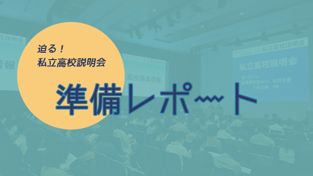
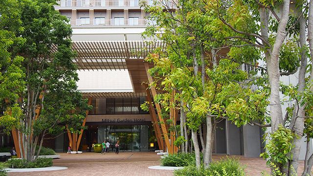
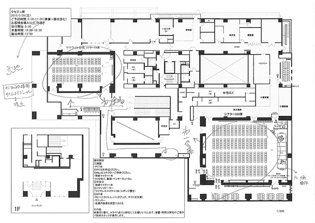
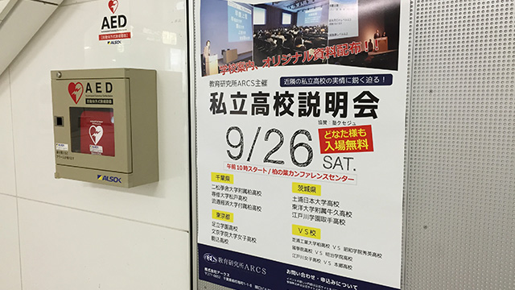
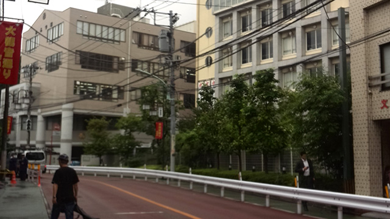
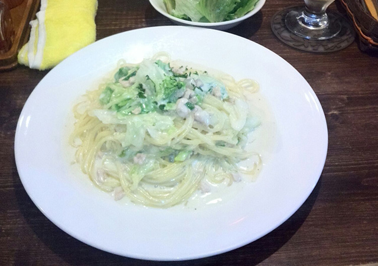

さて今年度最大のイベント私立高校説明会まで、あと２週間となりました。
私は総責任者なので、「事務スタッフとの打ち合わせ」「講師スタッフとの打ち合わせ」「私個人での高校取材」など準備が多岐にわたります。
さて、本日（このブログを書いているのは９／７（月））はまず午前中に、会場となる‘柏の葉カンファレンスセンター’の方との打ち合わせ。

打ち合わせるべき要点はいくつかあります。
まずはお客さんを会場にご案内する手順等。
今回は第１会場と第２会場がありますので、受付や誘導スタッフの配置や、チケット確認方法などを詳しく話し合います。

カンファレンスのフタッフの方お二人にいただいた平面図を見ながら我々（研究所と塾からぞろぞろと５人も押しかけました笑）皆で当日の状況をシミュレーション。
機材の使用についても今回は今まで以上に細かく打ち合わせなければなりません。
第１会場の正面にはパワーポイントなどのメインプレゼン映像を映し出しますが、今回はこれを第２会場の側面スクリーンに送信して映し出します。
また、第１会場全体の様子（高校の先生と我々とのやりとり）を中継で第２会場のメインスクリーンに中継することになっているので、その際の人員配置だとか、パソコンの台数の確認など諸々…。
ふぅ…、なんとかイメージができてきましたぞ。
と、一息つきたいところ体に鞭を打って、私は参加いただく駒込高校の取材に向かいます。
柏の葉キャンパスからの移動なので、つくばエクスプレスで北千住、そこから千代田線で千駄木までというシンプルなアクセスですね。
…と、ここで目に飛び込んできたのは、

オ～イェス！
これは噂の駅ポスターじゃないですか！
今回の私立高校説明会から一般公開していますので、新聞折り込みだけでなく駅ポスターも出しているんです。
うむ、なかなか神々しいではないか。
さて、電車に揺られながら駒込高校さんとの打ち合わせ内容の確認です。
夏休み前に一回目の取材は終えていて、その内容を踏まえての最終確認となります。
千駄木は柏周辺に住んでいる人なら柏駅から千代田線一本で行けるので、実は都内の共学の中ではかなり通いやすいんです。
地下鉄の出口付近で吹く爽やかな風を感じながら地上へ…。
ぐふぉ、雨。
ここ最近は断続的に降るよなぁ。
でも私はワイルドなので、よほど強さでない限り傘はいらぬ！というタイプ。
千駄木駅から駒込高校までは徒歩７分だから大丈夫でしょう。
で、３分後、あっさりとコンビニでビニール傘を購入（濡）。
個人的には傘をさすほどでない降り方でしたが、訪問するのにしっとりしすぎていては先方さんもとまどいますからね。
駒込高校への道中は‘団子坂’という上り坂。
大腿四頭筋の鍛錬をしつつ登校できるわけです。
ちょっと疲れたなと思うぐらいのところで見えてくる校舎。
ちょうどよい距離感なんですよね。

さて、校長の河合先生と入試担当の本田先生と最終打ち合わせした内容の詳細は秘密ですが、一つオモシロイことになりそうな展開になったので、それだけ報告します。
駒込高校では授業などの満足度の調査として生徒アンケートを毎年やっているそうなんですが、それを包み隠さずそっくり研究所に見せくれるというのです。
さらにPTAが独自に作って実施したアンケートもくださるとのこと。
数値的なことだけでなく、生徒の要望や時には不満のコメントなんかもあると思うのですが、それを隠さないのが駒込だ（校長先生談）ということなので、後日これをいただくことを約束して終了。
このアンケートからいろいろ質問すれば、なかなか面白いプレゼンになりそう。
という感触を得た私は、一回目の取材でお気に入りになった団子坂沿いの‘生パスタの店’へ直行。

ランチメニューの中の若鳥と野菜を使ったパスタの大盛りを注文しました。
いやぁ、もちもちして最高にウマイ！
乾麺を水に長時間浸してからゆでれば、生麺のようにもちもちする、というネットに載っていた方法を試してみたことがあるのですが、やはり本物の生麺は違いますわ。
研究所の会議が１５時からあって、少し遅れそうだけど…「ま、いっか」と思わせる味ですな（笑）。
さて、とにもかくにも「他では得られない情報」「独自の切り口」「地域の教育力向上」を目指してこのように奮闘していますので、皆様ご期待下さい。
今ならまだ御席も少し残っております！